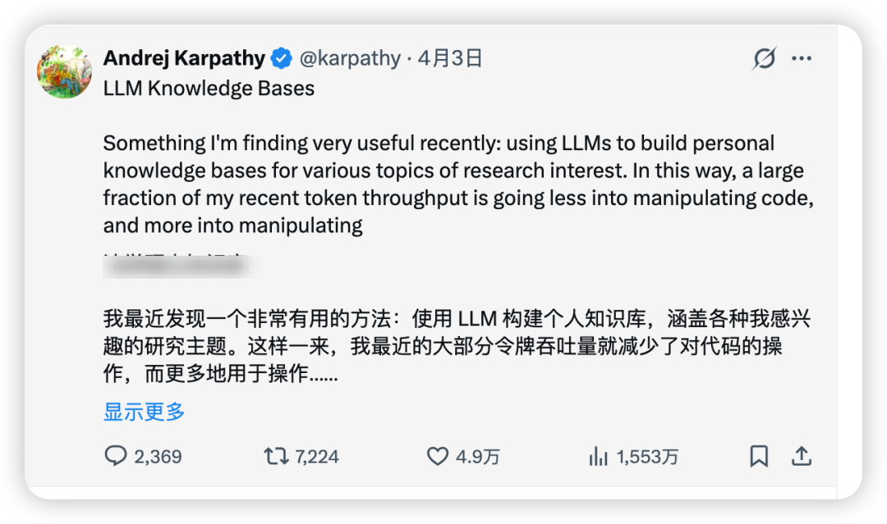
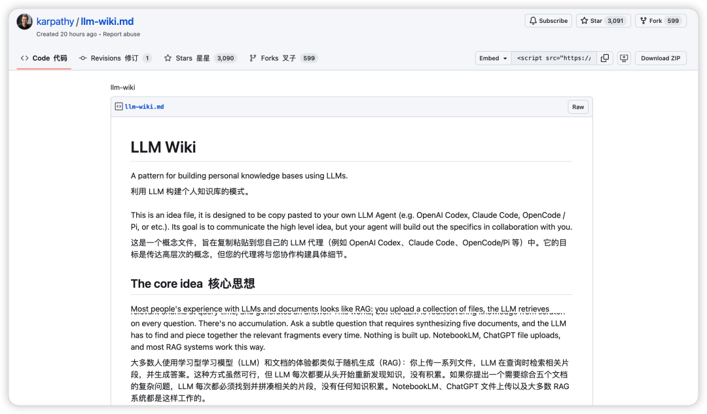
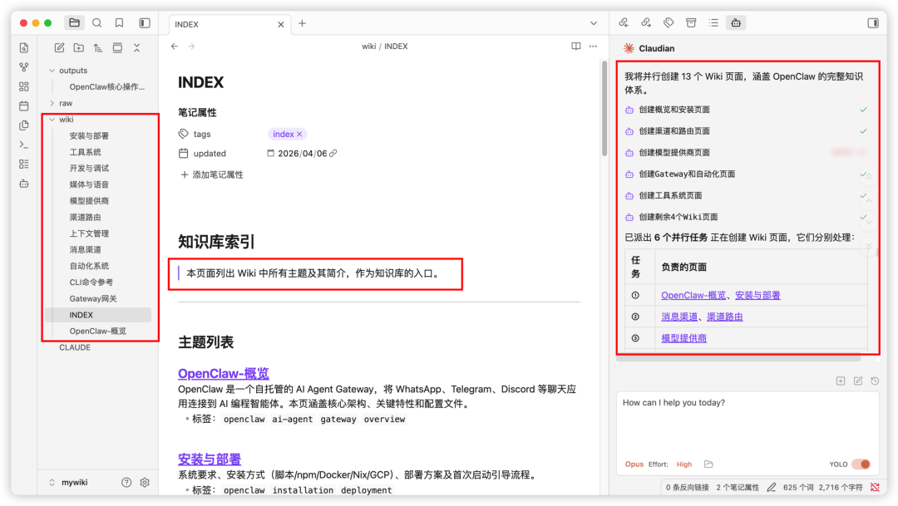
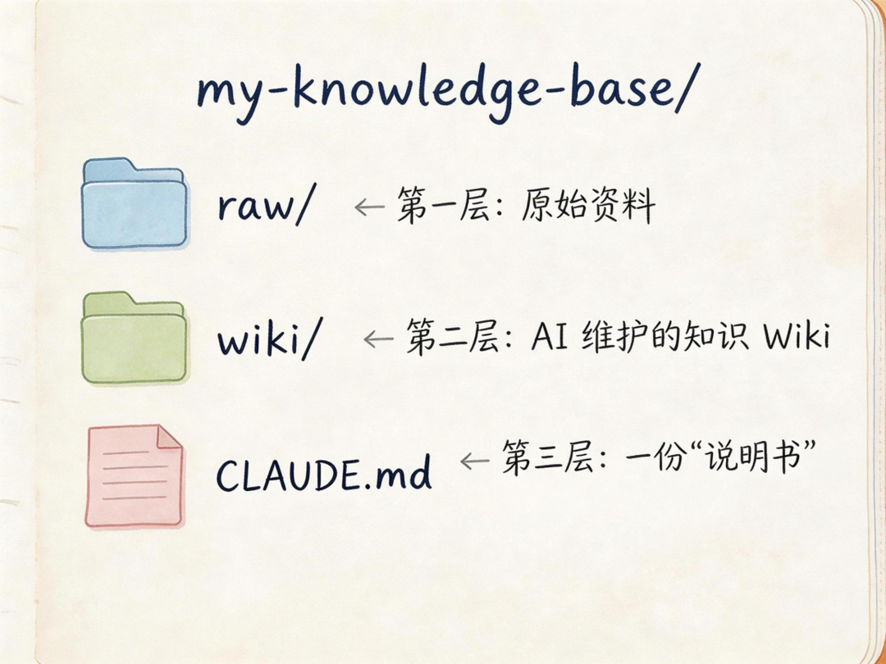
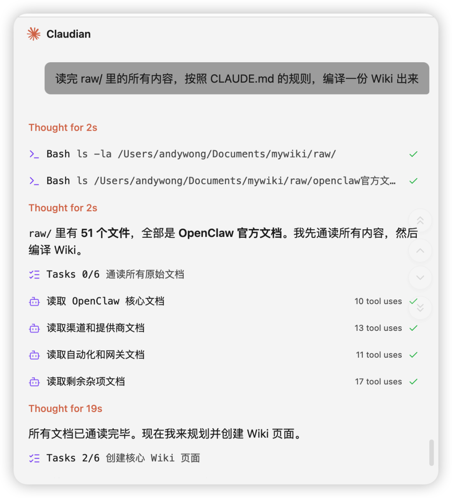
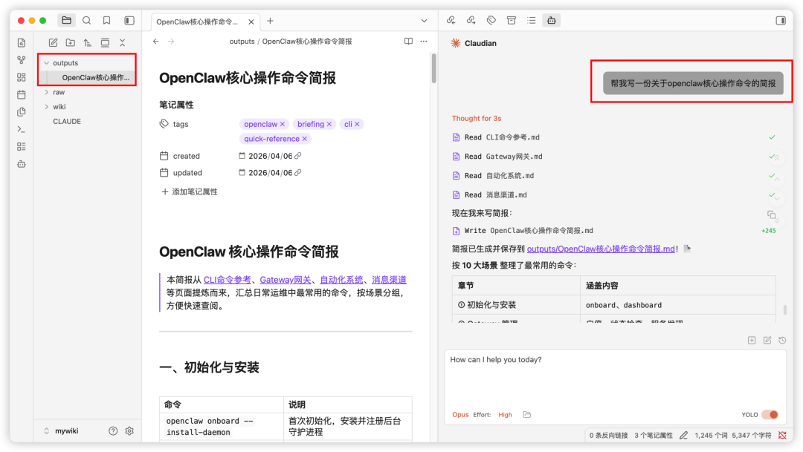
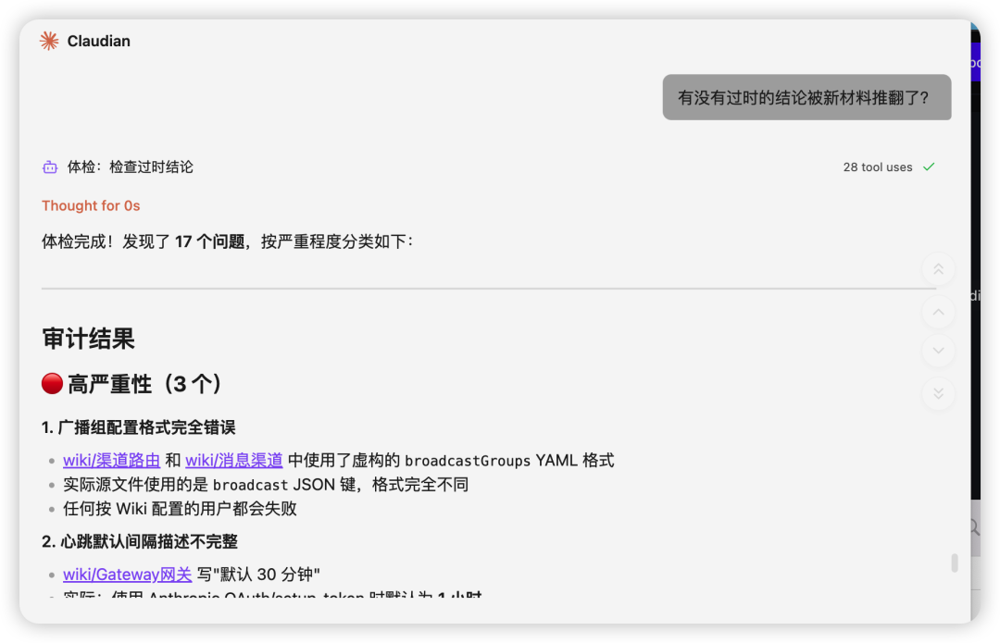
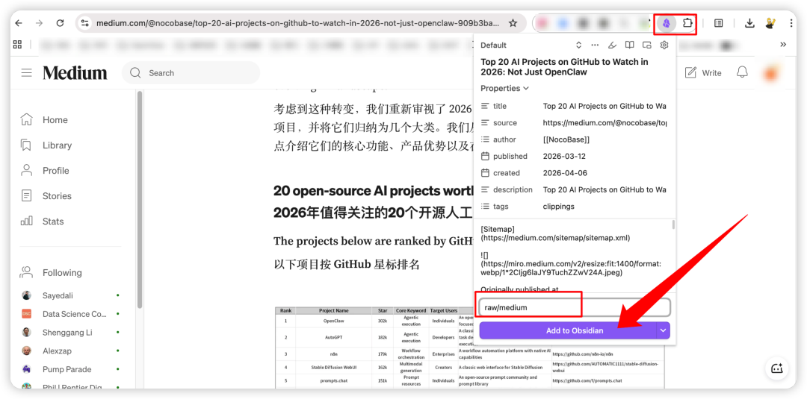
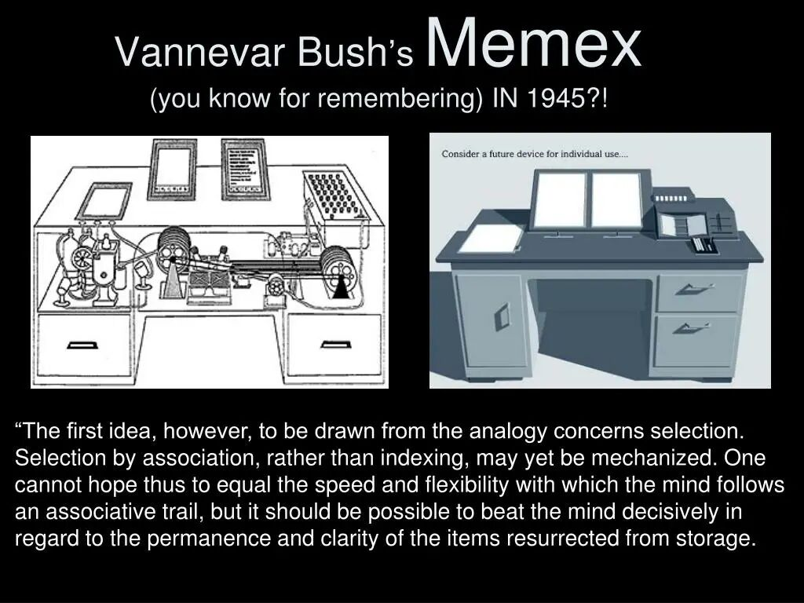
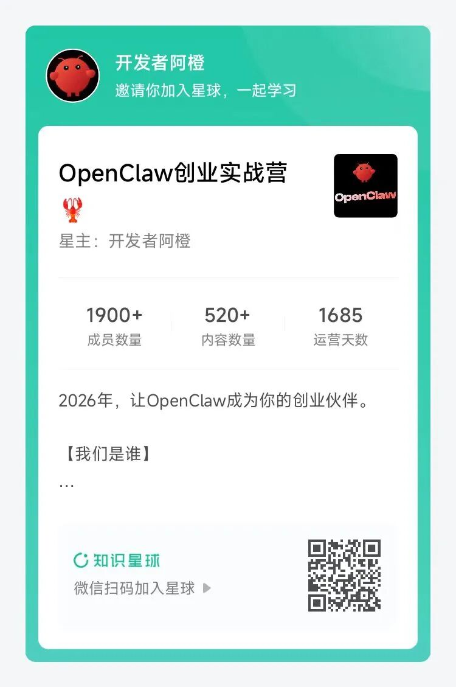

大家好，我是橙哥！最近，OpenAI创始团队成员、AI大神Andrej Karpathy 在 GitHub 上丢了一个 Gist，不到 24 小时，5000 多 Star，1000 多 Fork。
没有代码，没有产品，就一个想法。
但这个想法，可能改变你用 AI 管理知识的方式。

先说问题
你有没有过这种经历？
看到一篇好文章，收藏。看到一个干货帖，收藏。看到一个技术教程，收藏。
然后呢？
然后就没有然后了。
收藏夹里堆了几百篇文章，但你再也没打开过。偶尔想找某个知识点，翻半天找不到。更别说把不同文章里的观点串联起来，形成自己的理解。
又或者每次往ChatGPT或NotebookLM上传一堆文档后，提问时它确实能回答得头头是到。可下一次你问一个需要综合五六个文档的复杂问题时，它又得从头开始"翻找"一遍，仿佛之前什么都没看过。
就像每次考试都要重新复习一样——累，而且效率低。
这就是大多数人和知识的关系：只进不出，越堆越乱。
各种"第二大脑"工具（Notion、Feishu）试图解决这个问题，但说实话，大部分人用这些工具的唯一区别就是——把文章从浏览器的收藏夹搬到了另一个收藏夹。
为啥？因为维护一个知识库太累了。更新交叉引用、保持摘要最新、标注新旧信息的矛盾、维护几十个页面之间的一致性——这些体力活没人愿意干。

Karpathy 的想法是：这些体力活，让 AI 来干。
核心思路：别检索了，先"编译"一遍
现在主流的 AI 知识管理方案是 RAG（检索增强生成）。你上传一堆文档，AI 每次回答问题时，先从文档里搜相关片段，再拼出答案。
听起来挺方便对吧？但仔细想想，这里有个大问题：AI每次都是从零开始。
你问它一个需要综合五篇文章才能回答的问题，它每次都得重新找到那五篇，重新读懂，重新拼接。没有任何积累。问一百次，它就得重新来一百次。
Karpathy 的思路完全不同：
让 AI 提前把这些文档"消化"好，写成一个结构化的 Wiki。你问问题的时候，它直接读 Wiki 就行。
打个比方：RAG 就像每次考试都让你翻课本找答案；LLM Wiki 就像提前把课本读透了，写好了一本笔记，考试直接看笔记。

这本笔记不是死的。每当你加入新的材料，AI 会自动更新相关页面，修正过时的结论，补充新的交叉引用。你的知识库是"长"出来的，不是"堆"出来的。
真正聪明的做法：让AI帮你"写维基"
想象一下这样的场景：
你扔给AI一篇文章，它不是简单地存起来等以后检索，而是真正读进去、嚼碎、消化，然后整合到现有的知识体系里。它会：
• 创建或更新相关的主题页面 • 建立起页面之间的链接 • 标注新旧信息之间的矛盾 • 不断完善知识的"拼图"
每一次新的输入，都让这个系统变得更丰富、更聪明。而且这些积累是永久性的——下次再问类似问题，AI不用重新检索，直接就能给出更完整的答案。

三层架构：简单到离谱
这个系统长什么样？简单来说，整个系统就三层，没什么花哨的：

第一层：raw/（原材料区）
这是你的"垃圾桶"。什么都往里扔——文章、论文、截图、会议记录、播客笔记。不用整理，不用重命名，不用分类。扔进去就完事。
这一层是只读的，AI 只从这里取材，不会修改你的原始文件。
第二层：wiki/（AI 加工区）
这是 AI 的地盘。AI 会把 raw/ 里的材料消化后，在这里生成结构化的 Markdown 页面——摘要、概念词条、对比分析、主题总览。页面之间用 [[双向链接]] 互相关联。
你读，AI 写。
你可能会问：我一个源文件，AI 会动多少个 Wiki 页面？Karpathy 说是 10-15 个。因为一篇文章里的信息，可能涉及好几个概念页面需要更新。
第三层：CLAUDE.md（系统说明书）
这是整个系统的灵魂。就一个 Markdown 文件，告诉 AI：
• 这个知识库是关于什么的 • Wiki 页面怎么组织 • 什么规则必须遵守 • 新材料进来时怎么做
比如你可以写：
# 知识库说明
## 这是什么
一个关于"AI Agent 技术演进"的个人知识库。
## 组织规则
- 每个主题一个 .md 文件
- 每个页面开头一段话总结
- 相关主题用 [[topic-name]] 格式互链
- 维护一个 INDEX.md 列出所有主题
- 新增资料时，更新所有相关页面
## 我的关注点
- AI Agent 框架对比
- 多模态推理
- 开源模型生态就这些。没有数据库，没有 API，没有插件。文件夹 + 文本文件 + 一份说明书 = 整个系统。
三个核心操作
系统跑起来就三个动作：吃进去、问问题、体检。
1. 摄入（Ingest）
你把新材料丢到 raw/ 里，告诉 AI："处理一下这个。"
AI 会做这些事：
• 读懂材料 • 和你讨论关键要点 • 在 wiki/ 里写摘要页 • 更新 INDEX.md • 更新所有相关的概念页面 • 在日志里记录这次更新
Karpathy 的个人习惯是：一个一个来，每次都参与。他会读 AI 写的摘要，检查更新，引导 AI 关注什么。你也可以批量扔进去让 AI 自己处理，看你自己的风格。

2. 查询（Query）
有了 Wiki 之后，你可以问任何问题：
"根据 wiki 里的所有内容，我对 AI Agent 最大的认知盲区是什么？"
"文章 A 和文章 B 关于多模态的观点有什么冲突？"
"帮我写一份关于 AI Agent 框架选型的简报。"
关键点来了：好的问题和答案，也应该存回 Wiki。 你做了一次对比分析？存进去。你发现了一个新关联？存进去。这样你的每次探索都不会消失在聊天记录里，而是持续"喂肥"你的知识库。

3. 体检（Lint）
定期让 AI 检查一下 Wiki 的健康状况：
• 页面之间有没有矛盾？ • 有没有过时的结论被新材料推翻了？ • 有没有"孤儿页面"（没有任何页面链接到它）？ • 有没有重要概念被提到但还没有自己的页面？ • 哪些信息缺口可以用一次搜索补上？
这个步骤防止错误随着时间"滚雪球"。有人评论说得好："当输出被存回知识库时，错误也会一起累积。"定期体检就是纠错机制。

怎么自动收集素材？
一个很实用的技巧：用 agent-browser 自动抓取网页。
npm install -g agent-browser
agent-browser install然后让 AI 帮你抓取：
agent-browser open https://some-article-you-want.com
agent-browser get text "article"AI 打开页面，抓取正文，直接存到 raw/ 里。不用手动复制粘贴。对于 JavaScript 动态加载的页面、需要登录的页面、交互式图表的论文，都能搞定。
比 Playwright MCP 省 82% 的 token，同一个会话里能多抓 5-6 倍的页面。
当然，Obsidian 用户也可以用 Obsidian Web Clipper 浏览器扩展，一键把网页转成 Markdown 存入 Vault。

为什么这事儿能成？
说到底，维护知识库最累的不是"思考"，而是体力活。
更新交叉引用、保持摘要最新、标注矛盾、维护几十个页面的一致性——这些活儿的特点是：不难，但烦。 放弃 Wiki 的原因，从来都是因为维护负担增长得比价值快。
AI 不烦。AI 不会忘记更新一个交叉引用。AI 可以一次操作 15 个文件。RAG已死，不要再拿AI当搜索引擎来用！
你的任务是：选择好素材、把控方向、问对问题、思考这些信息意味着什么。
AI 的任务是：除此之外的一切。
Karpathy 引用了 Vannevar Bush 1945 年提出的 Memex 概念——一个个人化的、经过策展的知识库，文档之间有关联性的线索。Bush 的愿景和这个想法一脉相承，他当年唯一没解决的问题是：谁来维护？

现在有答案了。
10分钟就能搭起来
搞法很简单，将 Obsidian 和 Claude Code 结合起来：
1. 创建三个文件夹： raw/、wiki/、outputs/2. 写一份 CLAUDE.md，告诉 AI 你的关注点 3. 把你手头的材料丢进 raw/ 4. 在 Obsidian 里面打开 Claudian，指向这个项目目录，说："读完 raw/ 里的所有内容，按照 CLAUDE.md 的规则，编译一份 Wiki 出来。" 5. 然后去泡杯咖啡。
等你回来，你会看到一个有结构、有链接、有摘要的知识库——比你手动整理一个月的成果都好。

此后每次加新材料，AI 都会自动更新。每次问问题，答案都会存回来。每次体检，错误都会被发现。
知识不再是死的收藏，而是活的理解。
人的职责是筛选资料、提出好问题、思考意义。
AI的职责是其他一切。
这才是人机协作该有的样子。
👇 加入知识星球查看
用Obsidian打造超级知识库的实践步骤
